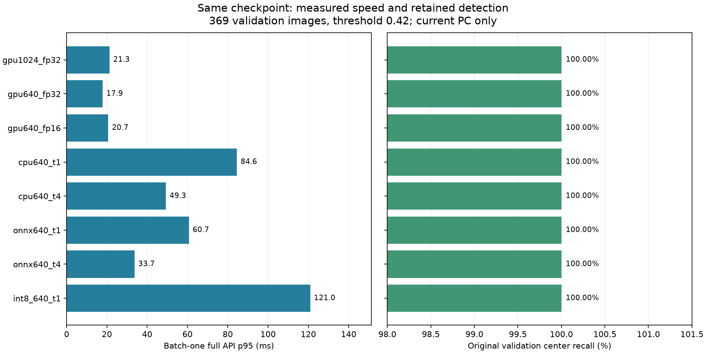
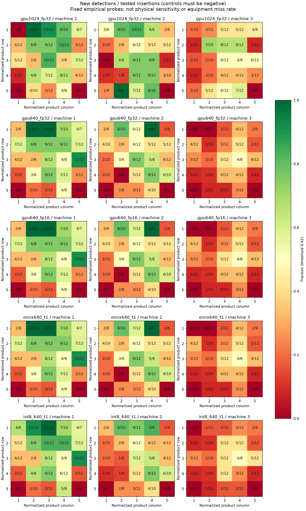
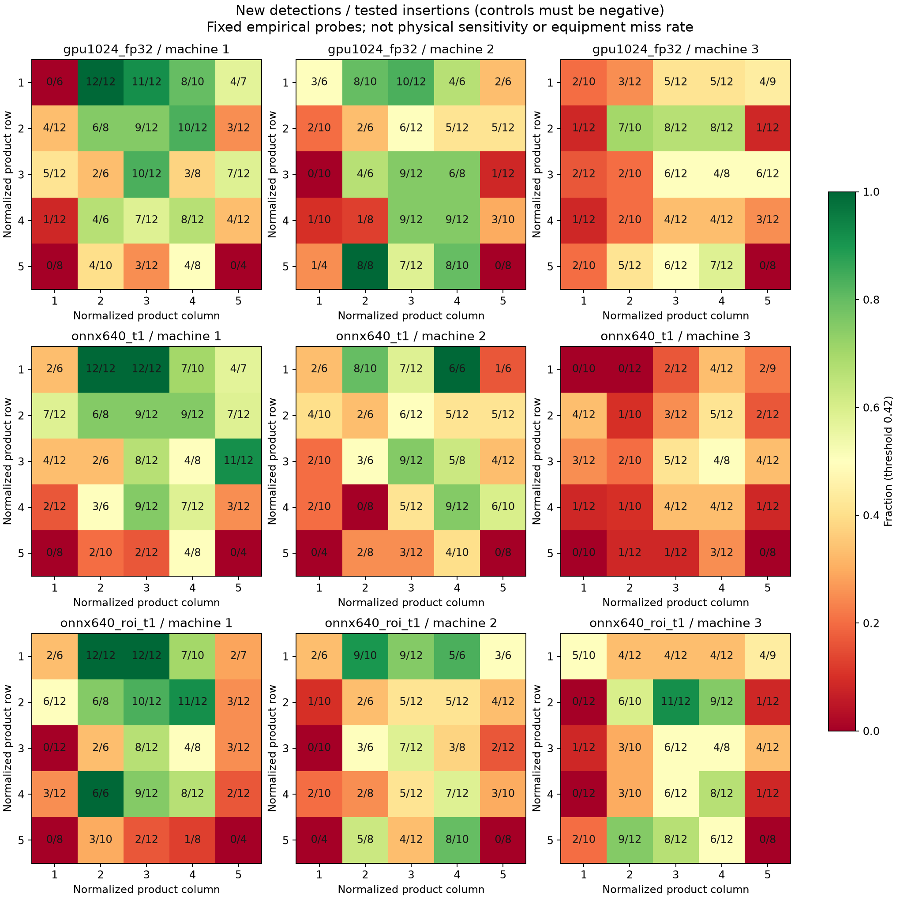

1024에서 640으로 바꾸었을 때 원본 중심 적중은 +0개, 합성 위치 신규 검출은 -49개 변했습니다. 두 결과를 함께 보고 입력 크기를 선택해야 합니다.
11th Gen Intel(R) Core(TM) i7-11700F @ 2.50GHz · NVIDIA GeForce RTX 3060 · PyTorch 2.11.0+cu128 · Ultralytics 8.4.152
같은 best.pt · 배치 1 · 워밍업 제외 · PNG 읽기부터 결과 반환까지. 장/초는 평균 처리시간의 역수이며 생산라인 보장 FPS가 아닙니다.
| 설정 | AP50 | F1@.42 | 중심 적중 | IoU FN | p50 ms | p95 ms | p99 ms | 직렬 장/초 | 파일 MiB | RSS MiB | GPU 할당 MiB |
|---|---|---|---|---|---|---|---|---|---|---|---|
| gpu1024_fp32 | 98.32% | 99.01% | 606/606 | 6 | 17.0 | 21.3 | 28.4 | 56.8 | 5.21 | 1288 | 121 |
| gpu640_fp32 | 98.89% | 99.34% | 606/606 | 4 | 15.6 | 17.9 | 23.0 | 62.2 | 5.21 | 1297 | 65 |
| gpu640_fp16 | 98.28% | 99.01% | 606/606 | 6 | 16.9 | 20.7 | 23.4 | 58.0 | 5.21 | 1682 | 48 |
| cpu640_t1 | 98.89% | 99.34% | 606/606 | 4 | 69.4 | 84.6 | 89.9 | 14.0 | 5.21 | 1731 | — |
| cpu640_t4 | 98.89% | 99.34% | 606/606 | 4 | 44.6 | 49.3 | 50.5 | 22.8 | 5.21 | 1736 | — |
| onnx640_t1 | 98.89% | 99.34% | 606/606 | 4 | 53.8 | 60.7 | 65.8 | 18.3 | 9.32 | 699 | — |
| onnx640_t4 | 98.89% | 99.34% | 606/606 | 4 | 30.9 | 33.7 | 37.0 | 33.6 | 9.32 | 704 | — |
| int8_640_t1 | 98.61% | 98.77% | 606/606 | 5 | 92.0 | 121.0 | 142.3 | 10.4 | 2.91 | 711 | — |

F1/FN은 IoU 0.5, 중심 적중은 예측 중심이 정답 상자 안에 있는 경우입니다. RSS는 프로세스 전체의 표본 피크이고 GPU 값은 PyTorch 할당 피크입니다. PT 체크포인트와 FP32 ONNX는 저장 정밀도가 달라 파일 크기를 같은 의미로 비교할 수 없습니다.
위 통합 실험의 RSS에는 PyTorch가 포함됩니다. 실제 CPU 배포에 가까운 별도 환경에서 같은 369장을 다시 측정했습니다. 통합 실행과 독립 실행의 예측값 일치도 확인했습니다.
| 독립 CPU 실행 | p95 ms | 직렬 장/초 | RSS MiB |
|---|---|---|---|
| FP32 / 1 thread | 57.53 | 18.79 | 165.7 |
| FP32 / 4 threads | 33.67 | 35.04 | 167.2 |
| INT8 Conv / 1 thread | 104.82 | 10.59 | 177.2 |
이번 Conv INT8 후보는 파일은 작아졌지만 CPU 처리시간이 늘고 F1도 낮아져 채택하지 않습니다. 모든 INT8 모델이 느리다는 뜻은 아닙니다.
CPU 4 threads는 여유 CPU가 충분할 때의 후보입니다. 1 thread 결과와 함께 필요한 자원을 제시하며, 장비에 4 threads를 쓸 수 있다고 가정하지 않습니다.
호기별 신호 2개와 배경 촬영 묶음 6개, 총 18개 배경 묶음에 762개 위치를 고정했습니다. 신호의 크기·명암·각도를 바꾸지 않았습니다. 원본 이물은 유지하고 새 위치만 채점했습니다.
| 설정 | 임계값 | 신규 검출/전체 | 비율 | 원본 검출 | 대조 검출 | 신규/대조음성 | 묶음 평균 |
|---|---|---|---|---|---|---|---|
| gpu1024_fp32 | 0.42 | 341/762 | 44.75% | 0 | 0 | 341/762 | 45.08% |
| gpu1024_fp32 | 0.1 | 587/762 | 77.03% | 0 | 0 | 587/762 | 76.67% |
| gpu640_fp32 | 0.42 | 292/762 | 38.32% | 0 | 0 | 292/762 | 38.98% |
| gpu640_fp32 | 0.1 | 526/762 | 69.03% | 0 | 0 | 526/762 | 69.06% |
| gpu640_fp16 | 0.42 | 293/762 | 38.45% | 0 | 0 | 293/762 | 39.12% |
| gpu640_fp16 | 0.1 | 527/762 | 69.16% | 0 | 0 | 527/762 | 69.17% |
| onnx640_t1 | 0.42 | 293/762 | 38.45% | 0 | 0 | 293/762 | 39.12% |
| onnx640_t1 | 0.1 | 526/762 | 69.03% | 0 | 0 | 526/762 | 69.06% |
| int8_640_t1 | 0.42 | 288/762 | 37.80% | 0 | 0 | 288/762 | 38.50% |
| int8_640_t1 | 0.1 | 528/762 | 69.29% | 0 | 0 | 528/762 | 69.33% |
신규 검출은 삽입 후에만 그 위치를 찾은 경우입니다. 원본·대조 처리에서 이미 검출됐던 위치는 신규 성공으로 세지 않습니다. 분모가 0인 지도 칸은 미측정입니다.

같은 촬영 묶음과 템플릿을 반복 사용했으므로 762개의 독립 현장 시험으로 해석하지 않습니다. 칸의 숫자는 신규 검출 수/유효 삽입 수입니다.
이번 고정 위치 집합에서는 원본·대조 처리의 해당 위치 검출이 없었습니다. 합성 이동 신호에서 검출 누락이 있어 후속 학습 후보를 만들 수 있습니다. 이는 실제 장비 미탐이나 위치 암기의 확정 증거가 아닙니다. 후속 증강을 한다면 train 출처만 사용하고, 동일 조건의 비증강 대조 학습과 원본 val 성능을 함께 비교해야 합니다.
합성 방식과 원본·대조·삽입 확대 보기640 FP32는 원본 F1이 높아졌지만, 합성 지도에서는 1024에서 찾던 119곳을 놓치고 70곳을 새로 찾았습니다. 전체 성공 수만 비교하면 서로 다른 실패 위치가 가려집니다.
| 설정 | 1024 성공 → 누락 | 1024 누락 → 성공 |
|---|---|---|
| gpu1024_fp32 | 0 | 0 |
| gpu640_fp32 | 119 | 70 |
| gpu640_fp16 | 118 | 70 |
| onnx640_t1 | 118 | 70 |
| int8_640_t1 | 119 | 66 |
분말유크림 검사에 연결할 시나리오는 제공 영상에서 드물었던 이물 위치와 주변 영상 무늬에도 검출이 유지되는가입니다. 이물을 임의로 더 작게 만들거나 흐리게 만들지 않고, 같은 신호를 옮겨 연산량 감소의 영향을 점검했습니다.
영상 밝기·질감과 결과의 동반 변화는 관찰할 수 있지만, 이를 분말 두께나 충전 상태가 원인이라고 해석할 수는 없습니다. 호기·템플릿 차이도 함께 섞여 있습니다.
첫 지도와 제품 배치를 보고 추가한 탐색 실험입니다. 원본 영상만으로 큰 어두운 영역을 찾고, 긴 변의 12% 여백을 둡니다. 영역 추정이 불안정하면 전체 영상을 사용합니다. 같은 모델을 한 번만 호출하고 좌표를 원본 위치로 복원합니다.
| 설정 | F1@.42 | 원본 중심 적중 | 합성 신규 검출 | 비율 | 독립 실행 p95 ms | RSS MiB |
|---|---|---|---|---|---|---|
| CPU 640 전체 영상 | 99.34% | 606/606 | 293/762 | 38.45% | 57.53 | 165.7 |
| CPU 640 제품 주변 자르기 | 99.01% | 606/606 | 327/762 | 42.91% | 58.06 | 168.8 |
같은 ONNX 640 모델에 제품 주변 자르기를 적용하면 기존 합성 성공 중 79곳을 놓치고, 기존 누락 중 113곳을 새로 찾았습니다. 순증은 34곳입니다. 원본 val 정답 상자 606개 중 ROI 밖으로 잘린 상자는 0개였습니다.

GPU에서는 ROI 640의 p95가 25.31 ms로, 전체 영상 1024보다 느렸습니다. CPU와 GPU에서 같은 전처리의 효용이 다를 수 있습니다.
아래는 통합 평가에서 측정한 현재 PC의 p95와 가정한 소프트웨어 시간 예산의 비교입니다. 실제 장비로 이식하면 같은 측정 절차를 다시 실행해야 합니다. 독립 CPU 실행 수치는 위 별도 표를 사용합니다.
50 ms는 설명용 초기값입니다. 실제 장비의 요구값을 뜻하지 않습니다. p95 통과는 하드 실시간 보장도 아니며, 카메라/PLC/배출 구동 시간을 별도로 확보해야 합니다.
가중치 SHA256: f7e1fe89035a25cb90ba36398636a41f4143a7169e9bd25a3767ac7f4c508f4c